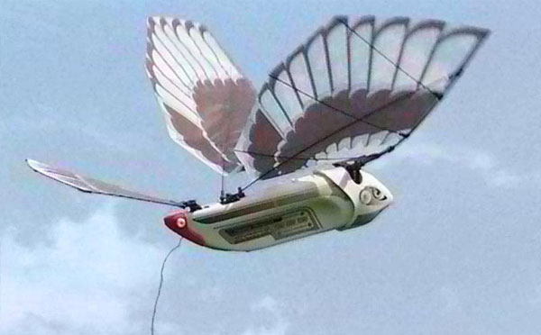
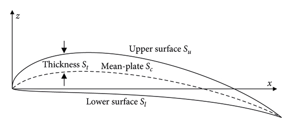
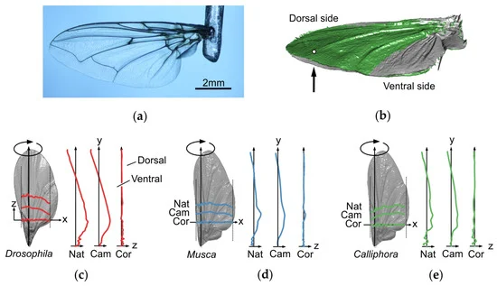
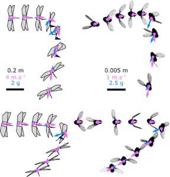
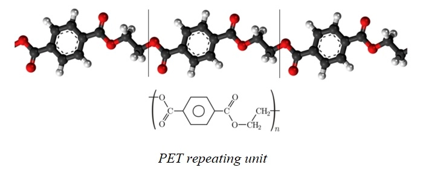
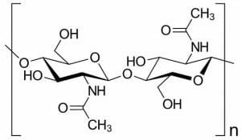
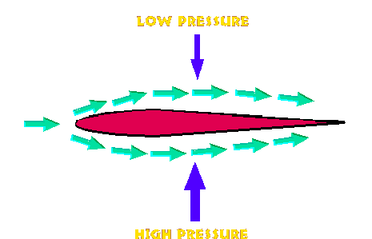

Studying Fly Wing Characteristics to Improve Aircraft Aerodynamics
Objectives
To analyze the structure and composition of fly wings.
To deduce the advantages and disadvantages of ornithopter wings modeled after fly wings.
To apply fly-inspired ornithopters in the context of geology and security in the Philippines.
To learn, discover, and have fun!

Biomimicry in Aeronautics
Human flight has been made possible by advances in technology. The Wright brothers created the first airplane, while Russia sent the first astronauts into space. Ornithopters, which mimic birds by flapping their wings, were first invented by the French in the 1870s.
Recent Developments
Recently, flapping-wing micro-air vehicles (FWMAVs) have emerged. The Team's study especially highlights the DelFly Nimble, a FWMAV inspired by fruit flies. Most importantly, the DelFly Nimble shows the potential of being useful in the Philippine setting.
Science Concepts
Biology
This research focuses on biomimicry, which is the science of mimicking and applying structures and mechanisms from natural organisms to create efficient man-made designs. The overall anatomy and structure of fly wings were studied and determined to be suitable for mimicry on ornithopter wings.
The features of fly wings, which were applied in the DelFly Nimble, have evolved over time to maximize aerodynamic efficiency: flexibility, shape, frequency, and stroke (Krishna et al., 2020).
Fly wings are made of chitin, which is a thin and elastic but durable structural polysaccharide (refer to Chem *link*). Veins and sensory receptors on the wings provide structure and rigidity. Cuticle layers form wing corrugation, which increases stiffness and prevents deformation during flight. In order to avoid interfering with flight, these structures are smaller than wing primary flow structures. Fly wings are fine-tuned for flight strength and endurance (Krishna et al., 2020).
Fly wings have a tapered shape and a semi-flexible structure that allows them to flap their wings at high frequencies while maintaining a rotating flapping stroke for efficient flight. This shape also allows them to fly quickly, turn sharply, and hover steadily. Flies must be able to fly efficiently in order to avoid predators, reproduce in difficult-to-find crevices, and obtain food.



Chemistry
The chemical composition of FWMAV wings is critical in their design. The wings of the popular FWMAV DelFly Nimble are made of polyethylene terephthalate (PET), a thin but strong polyester film used in commercial applications (The Index Project, n.d.). Figure 6 depicts the molecular structure of PET.

Because of hydrogen bonding between hydrogen and oxygen, PET, the material used in the wings of the DelFly Nimble, has a strong intermolecular force. It also has an aromatic ring, which increases the force of attraction between atoms and thus contributes to its durability (Carey, 2008). Chitin, the main component of fly wings, is also thin, flexible, and durable due to hydrogen bonding between the acetylamine and hydroxyl groups, which inspired the use of PET (Krishna et al., 2020).

Physics
The Theory of Flight involves four vectors: thrust, drag, lift, and weight. These forces must be balanced for heavier-than-air objects to fly.
Thrust is the force that launches the object in the way that force is directed. It can be computed through Newton’s second law of motion:
where thrust (F) is the product of mass (m) and acceleration (a) (MIT Department of Aeronautics and Astronautics, 1997).
Drag is the air resistance that opposes thrust. It is given in the equation below:
where drag is the product of the coefficient of drag (CD), half of the density (ρ) times the squared velocity (v2), and the area of reference (A) (MIT Department of Aeronautics and Astronautics, 1997).
Lift is the upward force that keeps the object afloat. It is created due to pressure differences from a special aircraft part called the airfoil. The equation of lift is:
where lift (L) is the product of the coefficient of lift (CL), half of the density (ρ) times the squared velocity (v2), and the wing area (S) (MIT Department of Aeronautics and Astronautics, 1997).

Weight is how heavy the object is with respect to the gravitational field strength of a celestial body, like Earth:
where weight (W) is the product of mass (m) and the gravitational field strength of a given celestial body (g) (MIT Department of Aeronautics and Astronautics, 1997).
By principle, thrust should exceed drag, and lift should exceed weight (MIT Department of Aeronautics and Astronautics, 1997).
The DelFly Nimble has a thrust-to-weight ratio of 1.3, with its weight being only 29 g. Moreover, its lift generation exceeds its weight not only because of how lightweight it is but also because of its flexible wings made of the polyester film PET mentioned above (DelFly, n.d.).
Moreover, its flexibility contributes to generating lift because of the less energy required to flap (Reid et al., 2019).
Application
Monitor
FWMAVs like the DelFly Nimble can be a lightweight contribution to the monitoring of tectonic activities in the Philippines where there are numerous active volcanoes and faults.
Search
Since FWMAVs are more maneuvereable during flight, they can also be used in going over rugged terrain, like Mount Apo, to look for lost individuals.
Survey
More than that, with the tiny size of FWMAVs, they will be helpful in reconnaissance and surveillance of the Filipino military.
Bhat, S. V., Zhao, J., Sheridan, J. A., Hourigan, K., & Thompson, M. M. (2019). Aspect ratio studies on insect wings. Physics of Fluids, 31(12), 121301. https://doi.org/10.1063/1.5129191
Chen, C., & Zhang, T. (2019). A Review of Design and Fabrication of the Bionic Flapping Wing Micro Air Vehicles. Micromachines, 10(2), 144. https://doi.org/10.3390/mi10020144
Hou, J., Aydemir, B. E., & Dumanlı, A. G. (2021). Understanding the structural diversity of chitins as a versatile biomaterial. Philosophical Transactions of the Royal Society A, 379(2206). https://doi.org/10.1098/rsta.2020.0331
Pillai, C. K. S., Paul, W., & Sharma, C. P. (2009). Chitin and chitosan polymers: Chemistry, solubility and fiber formation. Progress in Polymer Science, 34(7), 641–678. https://doi.org/10.1016/j.progpolymsci.2009.04.001
Reid, H. E., Schwab, R. K., Maxcer, M., Peterson, R. A., Johnson, E., & Jankauski, M. (2019). Wing flexibility reduces the energetic requirements of insect flight. Bioinspiration & Biomimetics, 14(5), 056007. https://doi.org/10.1088/1748-3190/ab2dbc
Xu, Hao & Huang, Qin & Han, Jinglong & Yun, Haiwei. (2020). Calculation of Hinge Moments for a Folding Wing Aircraft Based on High-Order Panel Method. Mathematical Problems in Engineering. 2020. 1-14. https://doi.org/10.1155/2020/8881233
The Team
Faye Abian
Designer
Loreeeeeeeeem
Samuel Apale
Coder, Designer
Loreeeeeeeeem
Bruce Bragat
Designer
Loreeeeeeeeem
Mich Emin
Author, Designer
Hello there! I'm Mich and I love to sing and dance! (i need sleep)